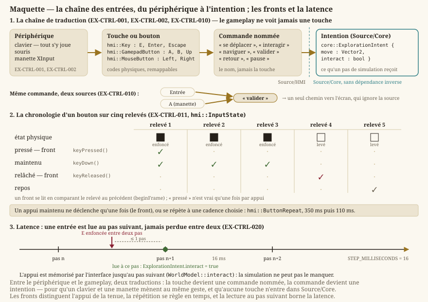

Contrôles & entrées
Statut : livré pour l'exploration, les écrans et l'arène. Le clavier suffit à tout ; la manette (XInput) pilote l'arène et la carte du monde. Dépend de
gameplay.md.
1. Périphériques
- EX-CTRL-001 — Le jeu doit être jouable entièrement au clavier.
- EX-CTRL-002 — Le jeu doit supporter une manette (XInput).
2. Commandes du jeu
Les entrées sont traduites en commandes nommées : un écran réagit à « déplacer », « valider » ou « retour », jamais à une touche en particulier.
| Commande | Clavier | Manette |
|---|---|---|
| Se déplacer (exploration) | ← ↑ → ↓, ZQSD ou WASD | — |
Interagir (EX-CTRL-022) | E ou Espace | — |
| Pause (exploration) | Échap | — |
| Naviguer (écrans, arène) | ← ↑ → ↓ | Croix directionnelle |
| Valider | Entrée | A |
| Retour | Échap | B |
- EX-CTRL-010 — Chaque commande du jeu doit être une commande nommée, dissociée de la touche ou du bouton physique qui la déclenche : une touche du clavier et un bouton de manette mènent à la même commande.
- EX-CTRL-011 — L'état d'un bouton doit distinguer pressé, maintenu et relâché d'une lecture à l'autre, pour qu'un appui maintenu ne déclenche qu'une fois — ou se répète à une cadence choisie, pas à celle de la lecture (
hmi::InputState). - EX-CTRL-012 — Les raccourcis de l'éditeur doivent être reconfigurables par fichier (
Settings/keybindings.json) ; un fichier absent ou partiel retombe sur les valeurs par défaut. - EX-CTRL-022 — Interagir doit être une commande dédiée (E ou Espace) qui déclenche l'entité placée devant le héros — dialogue, coffre, portail (
EX-EXP-004).
{kind=link}

Le dessin montre pourquoi la chaîne a quatre maillons et non deux : la commande nommée est ce qui permet à une touche et à un bouton de mener au même endroit, et l'intention est ce qui permet à Core de ne rien savoir des périphériques.
3. Réactivité
- EX-CTRL-020 — La latence entre une entrée et son effet ne doit pas dépasser un pas de simulation : une touche enfoncée est lue au pas suivant, jamais perdue entre deux.
Exigences retirées
Ancres conservées, jamais renumérotées : les lots livrés s'y réfèrent.
- EX-CTRL-013 (retirée au
LOT-88) — commande de ruée (dash) : le jeu n'a pas de ruée. - EX-CTRL-021 (retirée au
LOT-88) — échantillonnage des entrées par la boucle d'une fenêtre native : Qt distribue désormais les événements.
Traçabilité
L'acquisition des entrées relève de Source/HMI (hmi::InputState, hmi::GamepadNavigator) ; Source/Core ne reçoit que des intentions (core::ExplorationIntent), sans dépendance inverse. Voir exigences-non-fonctionnelles.md pour l'architecture.